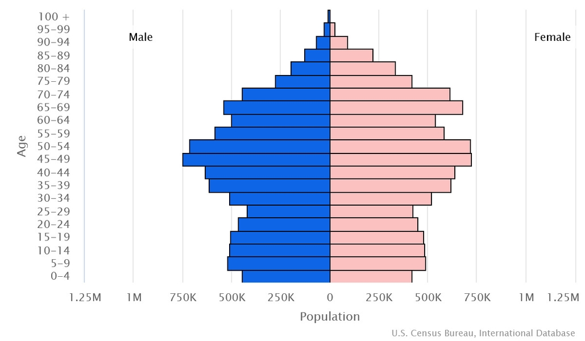

Politica Romaniei
Populatie
1899: ▬ 5,956,690
1912: ▲ 7,234,919
1930: ▲ 18,057,028
1941: ▼ 13,535,757
1948: ▲ 15,872,624
1956: ▲ 17,489,450
1966: ▲ 19,103,163
1977: ▲ 21,559,910
1992: ▲ 22,810,035
2002: ▼ 21,698,181
2011: ▼ 20,121,641
2023:▼ 18,326,327
Grupuri etnice
romani: 89.3%
maghiari: 6%
romi: 3.4%
ucraineni: 0.3%
germani: 0.1%
alte grupuri: 0.9%
Limbi vorbite
romana (limba oficiala): 91.6%
maghiara: 6.3%
roma: 1.2%
alte limbi: 0.7%
Religii
crestinism ortodox: 86.45%
romano-catolicism: 4.62%
calvinism: 3.19%
penticostalism: 1.92%
greco-catolicism: 0.8%
baptism: 0.6%
alte religii: 2.42%
Impartirea pe grupe de varsta
0-14 ani: 15.63% (masculin 1,472,449/feminin 1,391,671)
15-64 (de) ani: 62.13% (masculin 5,689,908/feminin 5,696,224)
65 de ani si peste: 22.24% (masculin 1,682,695/feminin 2,393,380)
Piramida populatiei din Romania:
Varsta mediana
total: 45.1 de ani
masculin: 43.6 de ani
feminin: 46.5 de ani
Speranta de viata la nastere
total: 76.3 de ani
masculin: 72.9 de ani
feminin: 80 de ani
Dinamica populatiei
rata de crestere a populatiei: -1.01% pe an
rata natalitatii: 8.6 nascuti ‰ locuitori
rata mortalitatii: 14.9 decese ‰ locuitori
rata migratiei nete: -3.9 emigranti ‰ locuitori
rata mortalitatii infantile: 5.7 decese ‰ nascuti vii
Urbanizare
populatia urbana: 54.7% din populatia totala
populatia rurala: 45.3% din populatia totala
rata de urbanizare: -0.15% pe an
Densitatea populatiei
medie: 84.4 loc/km²
Densitatea populatiei pe regiuni:
Rata de alfabetizare
total: 98.9%
masculin: 99.1%
feminin: 98.7%